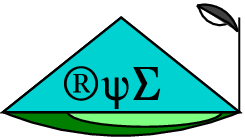

Constituição Federal (1988): Consolida a dignidade e a igualdade como direitos fundamentais.
Lei nº 10.098/2000: Estabelece normas gerais para a eliminação de barreiras urbanas e arquitetônicas.
Lei Brasileira de Inclusão (LBI - Lei nº 13.146/2015): Conhecida como o Estatuto da Pessoa com Deficiência, redefine a capacidade civil e amplia as obrigações do Estado e de empresas.
Arquitetônica / Urbanística: Rampas, calçadas niveladas, pisos táteis e banheiros adaptados.
Atitudinal: Eliminação de preconceitos, estereótipos, capacitismo e estigmas sociais.
Comunicacional: Uso de [Língua Brasileira de Sinais (LIBRAS no Portal do Ministério Público), audiodescrição, braile e textos simplificados.
Digital: Sites de órgãos públicos e privados navegáveis por leitores de tela e comandos de voz.
ABNT NBR 9050: Norma técnica brasileira que regula o dimensionamento de espaços, mobiliário e sinalização urbana.
Desenho Universal: Conceito de projetar produtos e ambientes para serem usados por todas as pessoas, sem necessidade de adaptação posterior.
Tríade da Norma: Todo projeto de acessibilidade visa garantir Autonomia, Segurança e Conforto ao usuário.
Barreiras Urbanas: Calçadas esburacadas e falta de sinalização tátil nas cidades.
Transporte Público: Frotas de ônibus e estações de trem sem elevadores ou manutenção adequada.
Mercado de Trabalho: Dificuldade no cumprimento das cotas de emprego por preconceito corporativo.
Educação Inclusiva: Escolas que carecem de materiais didáticos adaptados e profissionais de apoio.